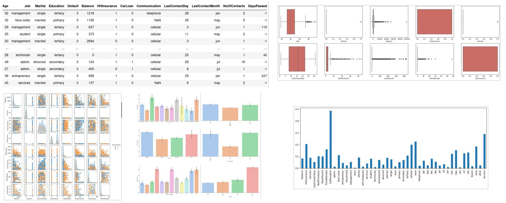
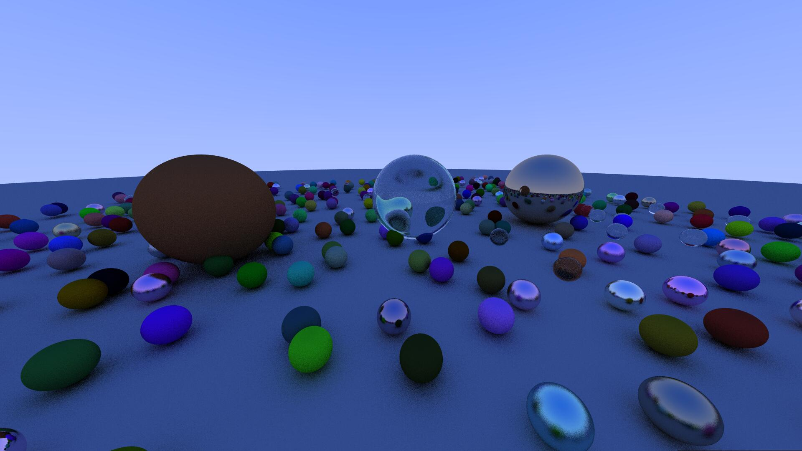

Portfolio
Houssam Halmaoui
Bienvenue dans mon portfolio où la vision par ordinateur et l'intelligence artificielle se rencontrent. Je suis un enseignant-chercheur spécialisé dans ces domaines fascinants et je suis ravi de vous présenter mes réalisations.
Projets :
Vision par ordinateur
-
Intelligence artificielle
Réalité augmentée pour les effets visuels
Développement d'un système de réalité augmentée [1] permettant la projection et le rendu d'un objet 3D dans une vidéo en temps réel, ainsi que de nouvelles architectures et datasets de mise en correspondance par Deep Learning ([2,3,4,5,6] et [15]).
Restauration des images pour l'aide à la conduite
Restauration des zones dégradées de l'image par un algorithme d'Inpainting [9] et restauration des images par estimation du bruit et de la dégradation en utilisant différents modèles physiques : brouillard météorologique [10, 11, 12, 13, 14], flou de mouvement...

Science des données : prévision de la demande, recommandation et anomalies
Prédiction des clients potentiels d'une compagnie d'assurance
Prédiction des clients susceptibles de s'inscrire à une assurance à partir des données de 4000 clients et de 19 caractéristiques numériques et catégoriques. Les résultats obtenus affichent un F1-score de 0,82 et une précision de 85% sur l'ensemble de test.

Prévision des ventes d'une chaîne de magasins
Prédiction des ventes futures d'une chaine de plusieurs magasins dans différentes villes, dans le but d'améliorer les performances logistiques. La dataset contient plus de 2 millions de données et 50 caractéristiques. Une erreur quadratique quasi nulle a été obtenue sur 20% de données de test.
Système de recommandation de films par approche collaborative
Recommandation de films aux utilisateurs par approche collaborative à partir des votes. La dataset utilisée contient 943 utilisateurs et 1682 films. L'image montre les 10 meilleurs films recommandés à un utilisateur à partir des votes estimés.
Détection des anomalies sur un serveur de réseau
Détection des anomalies à partir de deux caractéristiques du serveur : débit (mb/s) et latence de la réponse du serveur (ms). La dataset utilisées contient 307 échantillons.
Détection de SPAM par SVM
Classification des emails Spam avec les SVM par apprentissage sur une dataset de 4000 emails. La précision obtenue est de 99% sur un ensemble de test de 1000 emails.
Vision artificielle : applications diverses
Interprétation automatique de la langue des signes
Classification des images de l'alphabet dactylologique arabe (32 classes) par un CNN entrainé sur une dataset de 50000 images. La précision obtenue est de 90% sur un ensemble de test contenant 10% des données.
Détection et localisation rapide des objets
Localisation et reconnaissance rapide des objets avec un CNN fondée sur boîte englobante et entrainé sur une dataset de 800 images.
Reconnaissance des visages
Reconnaissance des visages par un CNN entrainé sur une dataset contenant 1140 images de 5 personnes. La précision obtenue est de 94% sur l'ensemble de test.
Contrôle qualité de fruits
Classification des images de fruits en bonne et mauvaise qualité à l'aide d'un CNN entrainé sur une dataset de 2000 images. La précision obtenue est de 96% sur l'ensemble de test.
Extraction de l'arrière plan par Alpha Matting
Séparation des objets de l'arrière plan par l'algorithme Alpha Matting bayésien local et en utilisant une simple segmentation fournie par l'utilisateur [15].
Clustering des données image
Segmentation des images par Clustering avec l'algorithme Kmeans et détection automatique du nombre optimal de classes.
Réduction de dimensionnalité par PCA
Réduction de dimension des images de visages de 1024 (32x32) à 256. La reconstruction montre une préservation des caractéristiques du visage avec comme application potentielle l'identification des visages.
Synthèse des images : systèmes génératifs et rendu 3D
Générateur d'images de visages
Développement d'un générateur de visage avec un réseau antagoniste génératif (GAN) entrainé sur une dataset de plus de 180000 images [8].
Rendu graphique par Ray-Tracing
Implémentation d'un algorithme de lancer de rayons ([7] et [15]), pour simuler divers effets de rendu photoréalistes (diffuse, métal, diélectrique...).

Rendu Graphique par rastérisation sur GPU
Programmation de la pipeline de rendu par rastérisation avec C++/OpenGL et le langage shader GLSL.
Publications
[1] Houssam Halmaoui and Abdelkrim Haqiq. Matchmoving previsualization based on artificial marker detection. In International Conference on Advanced Intelligent Systems and Informatics, pages 79-89. Springer, 2020.
[2] Houssam Halmaoui and Abdelkrim Haqiq. Feature detection and tracking for visual effects : Augmented reality and video stabilization. In International Conference on Artificial Intelligence and Industrial Applications, pages 291-311. Springer, 2020.
[3] Houssam Halmaoui and Abdelkrim Haqiq. Convolutional sliding window based model and synthetic dataset for fast feature detection. In The International Conference on Artificial Intelligence and Computer Vision, pages 101-111. Springer, 2021. (Best Paper Award).
[4] Houssam Halmaoui and Abdelkrim Haqiq. Synthetic feature pairs dataset and siamese convolutional model for image matching. Data in Brief Journal, Volume 41. Elsevier, 2022.
[5] Houssam Halmaoui and Abdelkrim Haqiq. Feature Matching for 3D AR : Review from Handcrafted Methods to Deep Learning. International Journal of Hybrid Intelligent Systems. IOS Press, 2022.
[6] Houssam Halmaoui and Abdelkrim Haqiq. Synthetic Feature Datasets for Image Matching. https ://data.mendeley.com/datasets/8jx8y9yfn5/1. 2021.
[7] Houssam Halmaoui and Abdelkrim Haqiq. Computer graphics rendering survey : From rasterization and ray tracing to deep learning. Innovations in Bio-Inspired Computing and Applications. IBICA 2021. Lecture Notes in Networks and Systems, vol 419. Springer, 2021.
[8] Houssam Halmaoui. L'intelligence artificielle, la réalité augmentée et la réalité virtuelle dans l'audiovisuel et le cinéma. 2022. URL : https://hal.science/hal-03741132
[9] Houssam Halmaoui. Restauration d'images par temps de brouillard et de pluie : applications aux aides à la conduite. Université d'Evry-Val d'Essonne, IFSTTAR, 2012. URL : https://theses.hal.science/tel-00830869
[10] Halmaoui, H., Cord, A., &Hautière, N. (2011, November). Contrast restoration of road images taken in foggy weather. In 2011 IEEE International Conference on Computer Vision Workshops (ICCV Workshops) (pp. 2057-2063). IEEE.
[11] Halmaoui, H., Joulan, K., Hautière, N., Cord, A., &Brémond, R. (2015). Quantitative model of the driver’s reaction time during daytime fog - application to a head up display-based advanced driver assistance system. IET intelligent transport systems, 9(4), 375-381.
[12] Tarel, J. P., Hautiere, N., Caraffa, L., Cord, A., Halmaoui, H., & Gruyer, D. (2012). Vision enhancement in homogeneous and heterogeneous fog. IEEE Intelligent Transportation Systems Magazine, 4(2), 6-20.
[13] Tarel, J. P., Hautiere, N., Cord, A., Gruyer, D., &Halmaoui, H. (2010, June). Improved visibility of road scene images under heterogeneous fog. In 2010 IEEE Intelligent Vehicles Symposium (pp. 478-485). IEEE.
[14] Hautière, N., Tarel, J. P., Halmaoui, H., Brémond, R., &Aubert, D. (2014). Enhanced fog detection and free-space segmentation for car navigation. Machine vision and applications, 25(3), 667-679.
[15] Houssam Halmaoui. Algorithmes de vision par ordinateur et d'apprentissage profond appliqués aux effets visuels et à la réalité augmentée. Université Hassan 1er Settat, 2022. URL : https://hal.science/tel-04125882